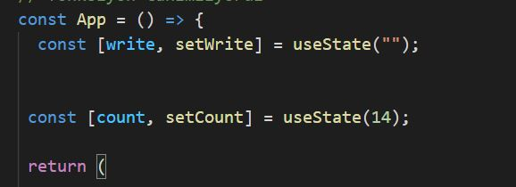

React JS İle Fonksiyon Kullanımı konusunu bir örnek yaparak açıklamak istiyorum
Öncelikli olarak kütüphanelerimizin eklenmesi ile başlıyoruz.
Daha sonra fonksiyonumuzu nasıl tanımlayacağımıza bakalım.
Fonksiyonumuzu tanımladıktan sonra projemizin kodlarını yazmaya başlıyoruz.
Yukarıdaki kodlarda anlatmak istediğim şey; arttır ve azalt adında 2 tane buton oluşturup bu butonlara
her bastığımızda
sayacımızı azaltması yada arttırması.
Arttır ve azalt butonlarının yanı sıra bir de inputa yazdığımızı yazıyı anlık olarak yazdıran bir kod yazıyoruz.
Son olarak ise hangi fonksiyonun varsayılan olarak çalıştırması gerektiğini belirtiyoruz.
Kodumuzun çalıştırılmış hali ise aşağıdaki gibidir.